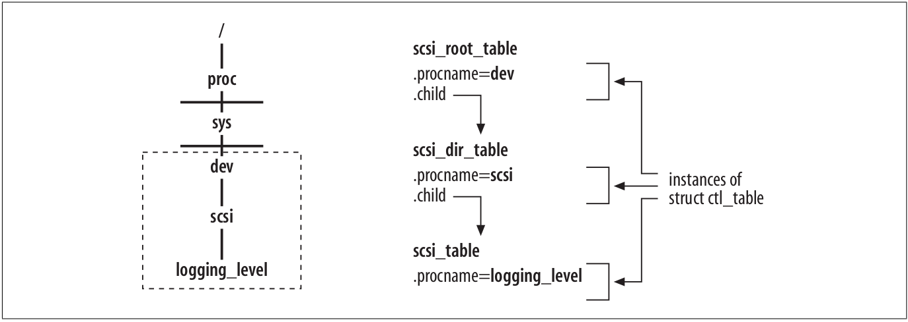

用户空间到内核层的接口
Table of Contents
本文主要介绍用户空间的应用通过什么机制来和内核沟通或读取内核导出的信息．但是不会关注这些实现的细节，不过会指出这些实现的代码在哪里，感兴趣的话可以详细研究．比如在哪里可以添加一个目录到/proc下．为了响应ioctl命令，有哪些内核的函数参与处理，以及netlink，一种当前普遍使用的应用与内核通信的机制．
1 概述
内核可以通过不同的接口将它内部的信息导出到用户空间．除了可以使用系统调用，还有其它的三种方式．
procfs(/proc文件系统)
虚拟的文件系统，通常挂载在/proc下，可以允许内核将信息以文件的形式导出．这些文件实际上不存在于磁盘里，不过可以通过重定位符存到磁盘，内核的各个组件可以创建这些文件．默认是开启的，不能编译成模块．
sysctl(就是/proc/sys目录)
这下面的文件主要是提供给用户可以读写内核变量的值．主要通过两种方式来改变这些变量的值，一 是sysctl系统调用，二是/proc/sys下的文件．
sysfs(/sys)
由于前两个系统被滥用，这个文件系统以一种更加整洁的方式导出大量的内核信息．
使用ioctl和netlink都可以向内核发送命令．
2 procfs与sysctl
procfs和sysctl都可以导出内核内部信息，但是procfs主要导出只读信息，而sysctl主要用于导出可写的信息（但是只能通过超级用户）．
procfs和sysctl之间选择的一个依据是导出信息的多少．关联简单的内核变量或数据结构通常通过sysctl，而其它的，可能会关联到更复杂的数据结构，也可能需要特别的格式，就通过procfs导出，后者例子通常比如缓存和统计信息．
许多网络功能都会在/proc下注册一个或多个文件，这在初始化阶段完成，包括启动时，或者模块加载时．当内核读这些文件时，内核会运行一些函数，并且返回一些输出．由网络代码注册的文件在/proc/net下．
/proc下的目录可以通过proc_mkdir来创建．而/proc下文件创建的公共接口是proc_register．
举个arp创建proc文件的例子：
static int __net_init arp_net_init(struct net *net) { if (!proc_create_net("arp", 0444, net->proc_net, &arp_seq_ops, sizeof(struct neigh_seq_state))) return -ENOMEM; return 0; } #define proc_create_net(name, mode, parent, ops, state_size) \ proc_create_net_data(name, mode, parent, ops, state_size, NULL) struct proc_dir_entry *proc_create_net_data(const char *name, umode_t mode, struct proc_dir_entry *parent, const struct seq_operations *ops, unsigned int state_size, void *data) { struct proc_dir_entry *p; p = proc_create_reg(name, mode, &parent, data); if (!p) return NULL; pde_force_lookup(p); p->proc_ops = &proc_net_seq_ops; p->seq_ops = ops; p->state_size = state_size; return proc_register(parent, p); }
在/proc/sys下看到的文件其实是内核的一个变量，对于每个这样的变量，内核可以定义如下几点：
- 将文件放置于何处．通常相同内核组件或特点的变量共用一个目录．比如在/proc/sys/net/ipv4下可以找到所有IPv4相关的文件．
- 文件具有什么名字．通常这个文件的名字就是内核变量的名字，但也有不同的情况，为了做到用户友好的名字．
- 权限．举个例子，一个文件可以被任何用户读取，但是修改的话就只有超级用户才能做到了．这个权限值在创建时可以传入．
除了直接读取或写/proc/sys，通过sysctl也可以做到．
一些目录或文件在启动时静态定义，另外的一些却是在动态运行时添加．举几个例子，它们会在运行时动态的在/proc/sys下创建目录或文件：
- 当一个新的网络协议加载或卸载时．
- 当一个网络设备注册或注销时．针对每个设备，都有一套参数在/proc/sys下．比如/proc/sys/net/ipv4/conf和/proc/sys/net/ipv4/neigh针对每个注册的网络设备都有一个目录．
/proc/sys的目录或文件通过ctl_table数据结构来表达．其通过register_sysctl_table和unregister_sysctl_table来注册和注销．
下面介绍下几个关键的成员：
const char *procname
出现在/proc/sys下的文件名．
int maxlen
导出的内核变量的最大长度．
umode_t mode
相关文件的权限值．
proc_handler *proc_handler
当读写/proc/sys下的文件时，会调用的函数．尤其是针对常规文件时（叶子节点），而针对目录，内核会分配一个默认的proc_handler函数．
extra1
extra2两个可选的参数，主要用来定义一个变量的最小和最大值．
取决于什么类型的变量关联到文件，proc_handler初始化方式不同．举个例子，当内核变量由一个或多个整数值组成时，proc_handler就是proc_dointvec．下面的表说明了几个可以用来初始化proc_handler的函数，这些函数在kernel/sysctl.c都有明确的定义和良好的注释．
| 函数 | 描述 |
| proc_dostring | 读/写一个串 |
| proc_dointvec | 读/写一组整数 |
下面举个来自sysctl.c里的vm_table变量的一部分：
static struct ctl_table vm_table[] = { { .procname = "overcommit_memory", .data = &sysctl_overcommit_memory, .maxlen = sizeof(sysctl_overcommit_memory), .mode = 0644, .proc_handler = overcommit_policy_handler, .extra1 = SYSCTL_ZERO, .extra2 = &two, },
这样在/proc/sys可以用find命令里找到这个文件．
下面再看一个来自同文件的ctl_table变量：
static struct ctl_table sysctl_base_table[] = { { .procname = "kernel", .mode = 0555, .child = kern_table, }, { .procname = "vm", .mode = 0555, .child = vm_table, }, { .procname = "fs", .mode = 0555, .child = fs_table, }, { .procname = "debug", .mode = 0555, .child = debug_table, }, { .procname = "dev", .mode = 0555, .child = dev_table, }, { } };
这样在/proc/sys下可以看到这些目录．
前述已提到，可以通过register_sysctl_table和unregister_sysctl_table在/proc/sys下注册和注销文件．注意传给这些函数的ctl_table参数都没有前缀/proc/sys．如果想在一个子目录下创建文件，就得通过ctl_table的child成员，看个例子：
static struct ctl_table scsi_table[] = { { .procname = "logging_level", .data = &scsi_logging_level, .maxlen = sizeof(scsi_logging_level), .mode = 0644, .proc_handler = proc_dointvec }, { } }; static struct ctl_table scsi_dir_table[] = { { .procname = "scsi", .mode = 0555, .child = scsi_table }, { } }; static struct ctl_table scsi_root_table[] = { { .procname = "dev", .mode = 0555, .child = scsi_dir_table }, { } }; static struct ctl_table_header *scsi_table_header; int __init scsi_init_sysctl(void) { scsi_table_header = register_sysctl_table(scsi_root_table); if (!scsi_table_header) return -ENOMEM; return 0; }
传给register_sysctl_table函数的就是ctl_table的根．最后的结果如下图：

Figure 1: /proc/sys/dev/scsi/logging_level文件的注册结果
假设想添加一个文件abc到相同的目录，也是很简单的了，就再定义一个abc的ctl_table实例，就是最后一级的添加个文件．比如下面的例子：
/* file(s) in /proc/sys/dev/mac_hid */ static struct ctl_table mac_hid_files[] = { { .procname = "mouse_button_emulation", .data = &mouse_emulate_buttons, .maxlen = sizeof(int), .mode = 0644, .proc_handler = mac_hid_toggle_emumouse, }, { .procname = "mouse_button2_keycode", .data = &mouse_button2_keycode, .maxlen = sizeof(int), .mode = 0644, .proc_handler = proc_dointvec, }, { .procname = "mouse_button3_keycode", .data = &mouse_button3_keycode, .maxlen = sizeof(int), .mode = 0644, .proc_handler = proc_dointvec, }, { } }; /* dir in /proc/sys/dev */ static struct ctl_table mac_hid_dir[] = { { .procname = "mac_hid", .maxlen = 0, .mode = 0555, .child = mac_hid_files, }, { } };